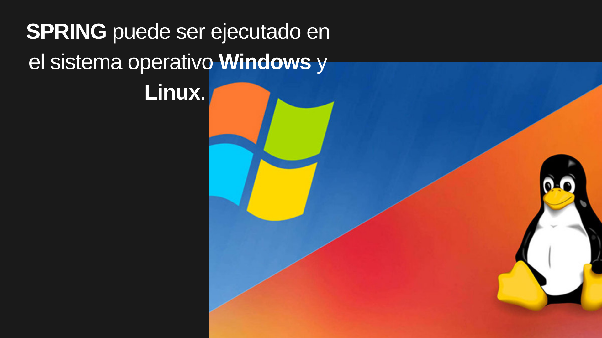
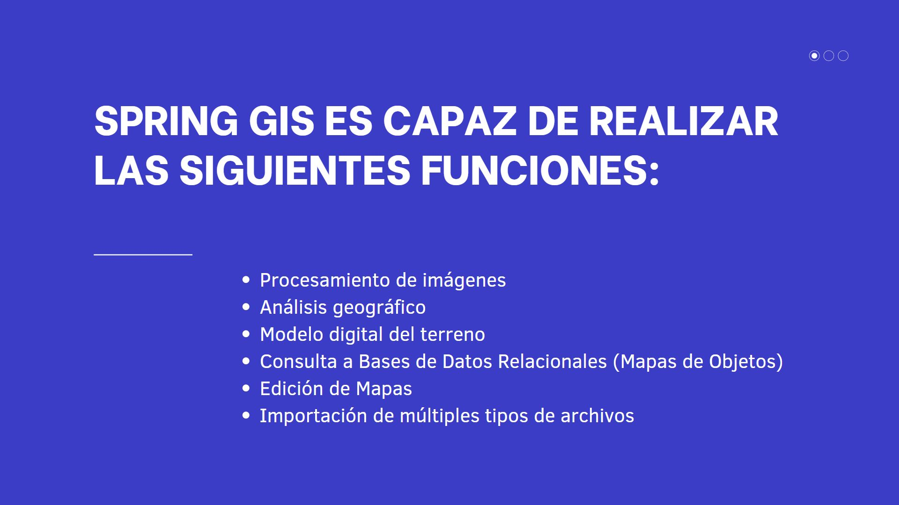
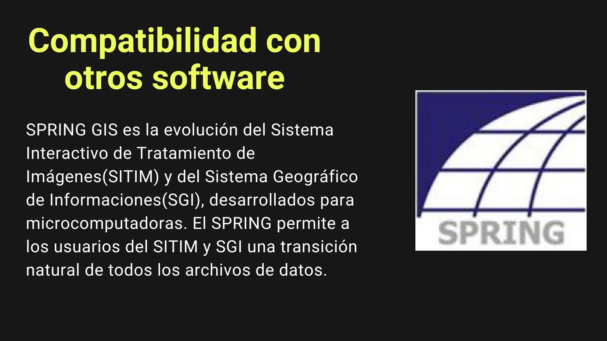
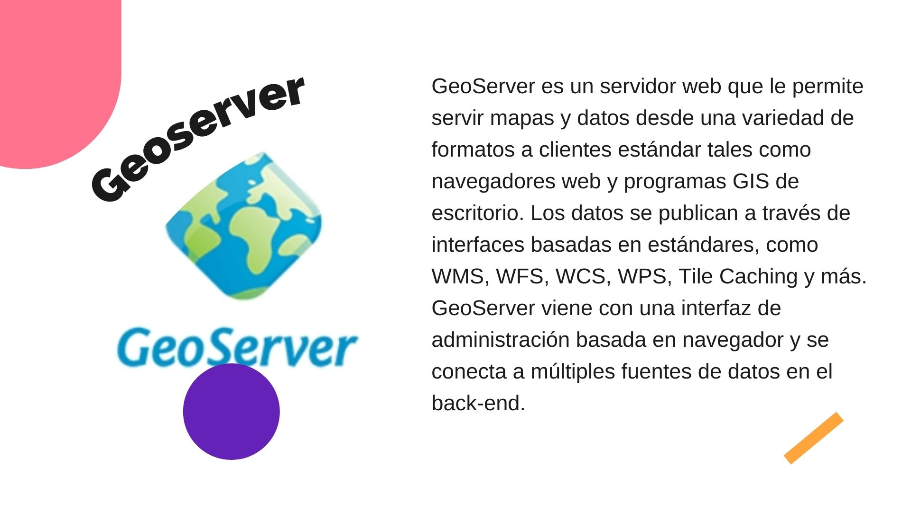
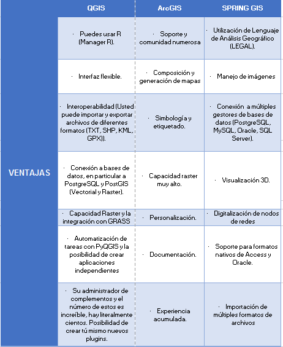
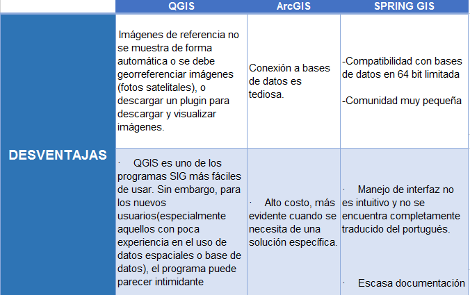

El aplicativo esta dividido en 4 modulos:

| Modulo | Proposito | Funcionalidad |
| IMPIMA | Lectura de imagenes | Permite transformar imágenes de tipo .spg |
| SPRINNG | Módulo principal para entrada y manipulación de datos | Permite el procesamiento de imágenes, análisis geográfica, consulta de banco de datos, Modelado digital de terreno e importadores y exportadores de datos |
| SCARTA | Generación de cartas | Generación interactiva de cartas, biblioteca de símbolos cartográficos, generación de leyendas y textos |
| IPLOT | Impresión de archivos IPL | Permite abrir un archivo IPL generado por scarta e imprime en un driver ya instalado o en un archivo PostScript |
Capacidades y caracteristicas del software





Ventajas y desventajas de SPRING GIS

